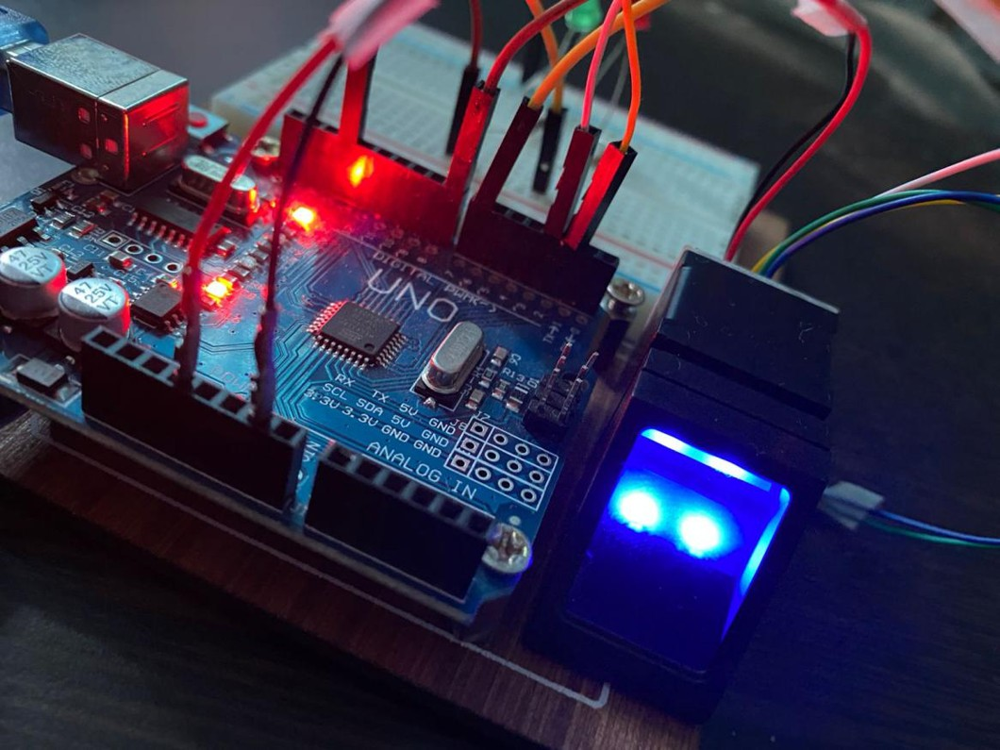

Attendance Management system
A Attendance Management System that automates student and faculty attendance tracking using biometric fingerprint scanning and facial recognition using Arduino.

A snapshot of the Book store.
Key Features
- Attendance – Uses fingerprint scanners and face recognition for accurate student tracking.
- Arduino Integration – Hardware components like cameras and fingerprint sensors controlled via Arduino.
- Improved Efficiency – Eliminates manual roll calls, saves time, and enhances attendance accuracy.
- Parental & University Monitoring – Provides real-time reports on student attendance to faculty and parents.